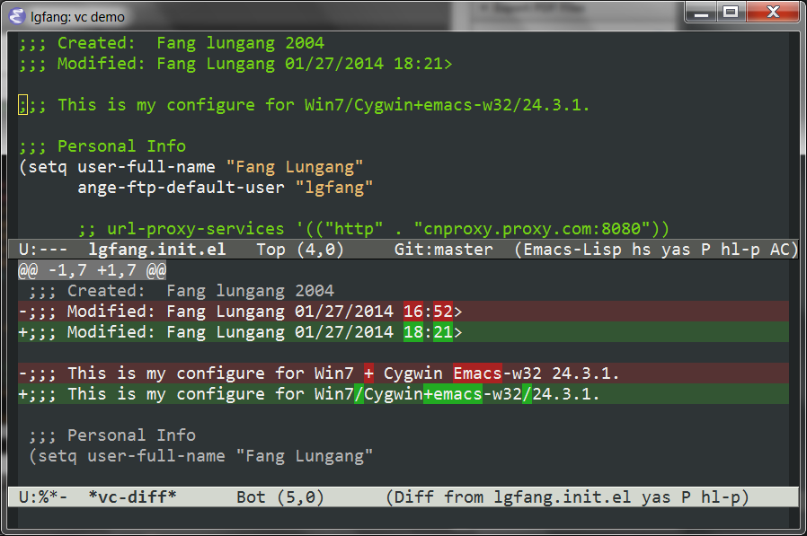
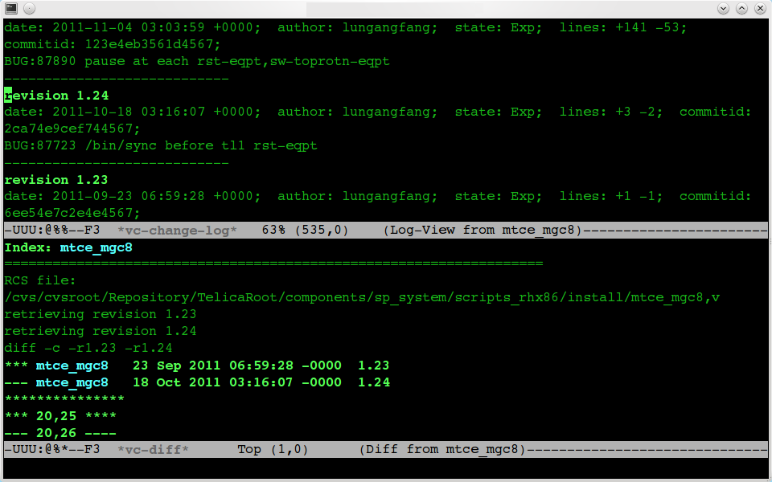

Version Control in Emacs
Table of Contents
- 1. Supported Version Control Systems
- 2. Current status:
C-x v d - 3. Diff:
C-x v = - 4. Ediff:
M-x ediff-revisionorC-x v M-= - 5. Check-in:
C-x v v - 6. Discard changes:
C-x v u - 7. Annotate:
C-x v g - 8. View another revision:
C-x v ~ - 9. Log view
- 10. Porting code among branches
- 11. Corresponding code
1 Supported Version Control Systems
All the version control systems I has ever confronted with are supported either with builtin packages or 3rd-party ones. There are more powerful (and more specific) plugins. But I simply prefer the builtin ones since these wrappers adapt interfaces of different VC systems to a uniform Emacs VC interface.
- cvs
- builtin
- svn
- builtin
- git
- builtin
- clearcase
- I am using vc-clearcase.
- perforce
- I was using
p4.elyears before. Now,vc-p4.elseems more appealing to me (but I am no longer using perforce).
In examples in this post, I mainly use git and sometimes cvs. If you are using other VC systems, say SVN, the screen output may differ slightly. But the operations shall be the same.
2 Current status: C-x v d
3 Diff: C-x v =
C-u C-x v = to speficy versions to diff.
In the diff buffer, "n/p" to navigate, "<enter>" to jump to corresponding line in corresponding file.

4 Ediff: M-x ediff-revision or C-x v M-=
If you prefer the "fancier" ediff,
5 Check-in: C-x v v
- To be accurate, this is "vc-next-action".
- You can't forget to save files.
M-pto reuse previous log messages.
6 Discard changes: C-x v u
This will
- Automatically pop up a diff window to help you recollect what as changed.
- Ask you for confirmation.
7 Annotate: C-x v g
Also note the indication of branch in mode line.
8 View another revision: C-x v ~
Or, do it in log view as described later
9 Log view
9.1 Entering the log view: C-x v l (Or l in vc-dir buffer)
9.2 For a directory, log view shows the topolopy

9.3 Diff a rev with its previous one by pressing d
9.4 Diff arbitrary two marked revs (use m to mark)
This one and the following one need code snippets attached at the end of this article.
9.5 Other hotkeys in log view buffer
- Ediff instead of diff by
DThis will be much slower than plain diff if the file is large and the network is slow.
- View (retrieve) a revision by
f - Annotate revision by
a
9.6 Screenshots for cvs
9.6.1 1

9.6.2 2

9.6.3 3
10 Porting code among branches
This is a functionality tailored for my convenience. The code is ugly, but works.
- You are in a buffer under CVS.
M-x lgfang-cvs-co- It asks for a TAG. Input one (usually, you just
M-pto get one from input history). - It asks for module (file). In most cases, just press "enter".

- It asks if you want merge.

- It will then
- create a directory
$HOME/sandbox/tag-you-entered/. - checkout the file (module) you specified with that tag.
- merge the change (
cvs update -j tag filename). - open the file just checked-out.
- create a directory
11 Corresponding code
(eval-after-load "log-view" '(progn ;; the default face for marked log entries are too hard to spot (set-face-attribute 'log-view-file nil :slant 'italic :weight 'bold :height 1.1) (defun lgfang-log-view-diff (beg end) "Overwrite the default log-view-diff, uses log-view-get-marked" (interactive (if (log-view-get-marked) (log-view-get-marked) (list (log-view-current-tag (point)) (log-view-current-tag (point))))) (when (string-equal beg end) (save-excursion (goto-char (point)) ;not marked (log-view-msg-next) (setq beg (log-view-current-tag)))) (vc-version-diff (if log-view-per-file-logs (list (log-view-current-file)) log-view-vc-fileset) beg end)) (fset 'log-view-diff 'lgfang-log-view-diff) (defun lgfang-log-view-ediff (beg end) "Similar to lgfang-log-view-diff, uses ediff and much slower." (interactive (if (log-view-get-marked) (log-view-get-marked) (list (log-view-current-tag (point)) (log-view-current-tag (point))))) (when (string-equal beg end) (save-excursion (goto-char (point)) ;not marked (log-view-msg-next) (setq beg (log-view-current-tag)))) (ediff-load-version-control) (funcall (intern (format "ediff-%S-internal" ediff-version-control-package)) beg end nil)) (define-key log-view-mode-map (kbd "D") 'lgfang-log-view-ediff))) (eval-after-load 'vc-hooks '(progn (defun lgfang-vc-ediff () "Similar to vc-diff, but uses ediff. From network" (interactive) (require 'ediff) (let ((file (or (buffer-file-name) (error "Current buffer is not visiting a file")))) (if (and (buffer-modified-p) (y-or-n-p (message "Buffer %s is modified. Save buffer? " (buffer-name)))) (save-buffer (current-buffer))) (ediff-load-version-control) (funcall (intern (format "ediff-%S-internal" ediff-version-control-package)) "" "" nil))) (define-key vc-prefix-map (kbd "M-=") 'lgfang-vc-ediff))) (defvar lgfang-vc-tag-history nil "History list for tags") (defun lgfang-cvs-co(tag module tomerge) (require 'pcvs) (interactive (list (read-from-minibuffer "tag: " nil nil nil 'lgfang-vc-tag-history) (read-from-minibuffer "module:" (replace-regexp-in-string ".*sandbox/[^/]*/" "" (buffer-file-name)) nil nil 'minibuffer-history) (y-or-n-p "merge "))) (let* ((sandbox (file-name-as-directory (expand-file-name "~/sandbox"))) (directory (concat sandbox (if (string-equal tag "") "main" tag))) (working-rev (vc-working-revision (buffer-file-name)))) (make-directory directory t) (cvs-cmd-do "checkout" directory (list "-r" tag module) nil 'new :noexist t) (when tomerge (cvs-cmd-do "update" directory (list "-j" working-rev module) nil 'new :noexist t)) (find-file (concat directory "/" module))))